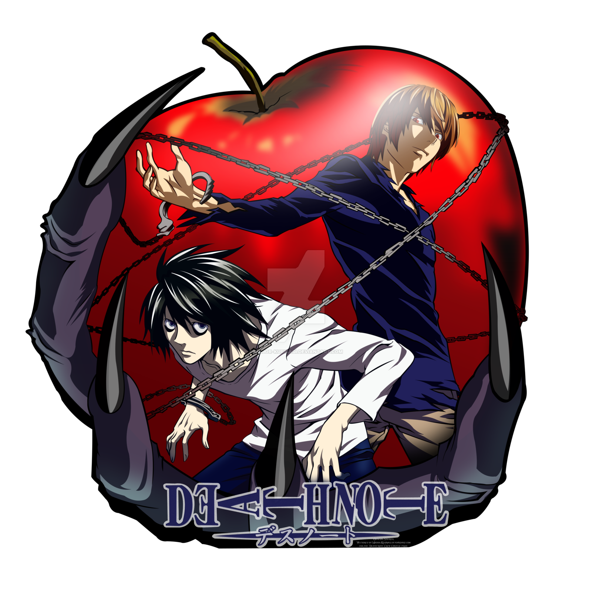

Death Note
Sinopse:
A história centra-se em Light Yagami um estudante do ensino médio que descobre um caderno sobrenatural chamado Death Note, no qual pode matar pessoas se os nomes forem escritos nele enquanto o portador visualizar mentalmente o rosto de alguém que quer assassinar. A partir daí Light tenta eliminar todos os criminosos e criar um mundo onde não exista o mal, mas seus planos são contrariados por L, um famoso detetive particular.


Clique na TV para ver todos os episódios completos de Death Note.
Nosso instagram